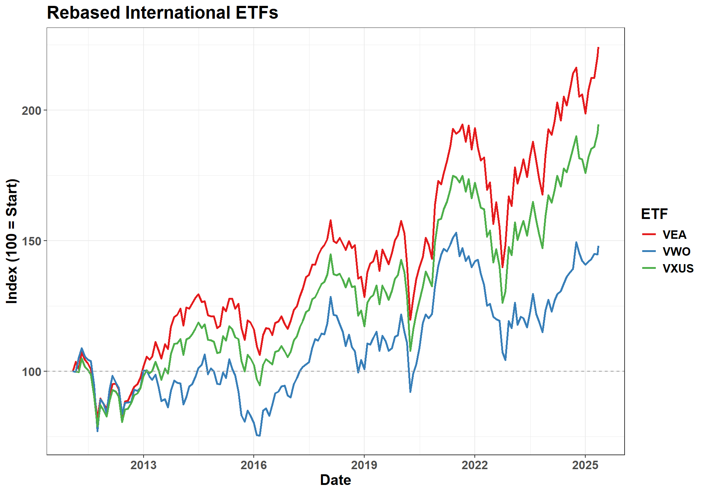
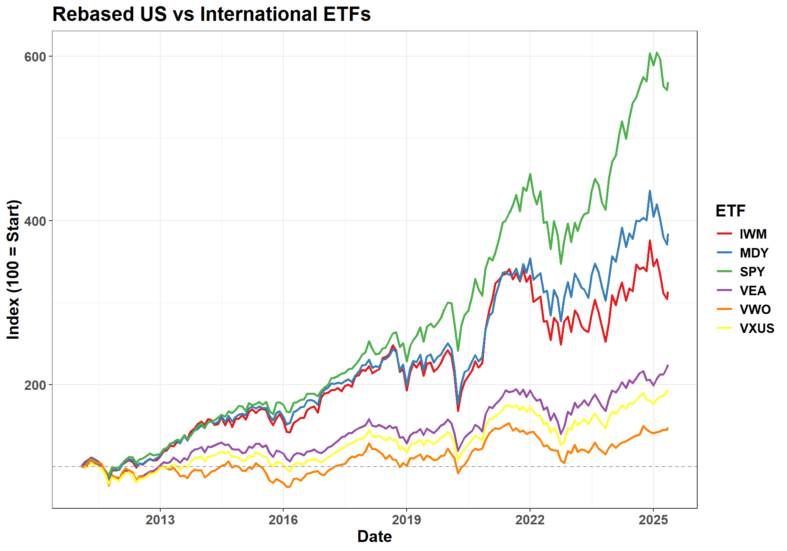
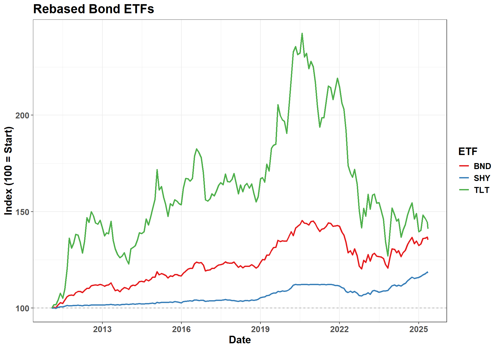
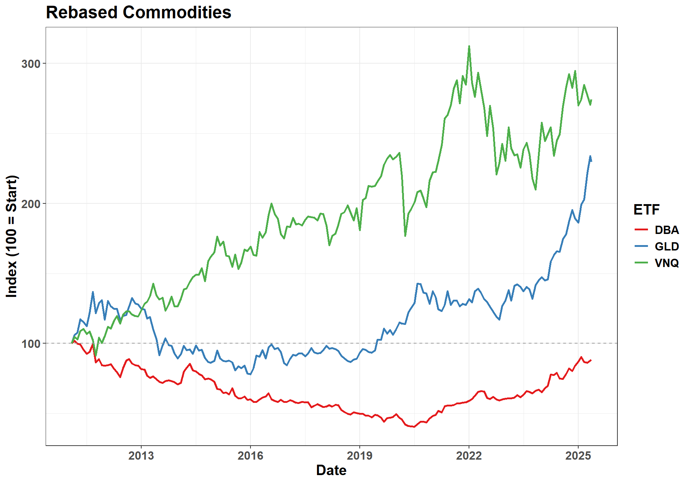

In a globalized economy, investors are increasingly looking beyond domestic markets to enhance their portfolio performance. This project explores a key question: “How can integrating a diverse mix of internationally traded funds boost returns compared to relying solely on U.S. funds, all while aligning with individual financial goals and investment time frames?”
Understanding this question is vital for modern investors seeking long-term growth, risk mitigation, and tailored strategies that reflect their unique circumstances. While U.S. markets have historically delivered strong returns, they represent only a portion of global economic activity. Diversifying across international markets offers exposure to different growth cycles, sector strengths, and macroeconomic conditions—potentially improving risk-adjusted returns. This analysis aims to shed light on whether a global investment approach can better serve a wide range of personal financial objectives.
Research Question
The individual Research Question that I have analyzed for this project is:
Are developed international markets more effective than emerging markets for long-term portfolio growth, and how do they compare to the United States?
To provide a comprehensive perspective, this project goes beyond equities. It also incorporates additional asset classes—bonds, real estate investment trusts (REITs), commodities , and inflation-protected securities—to construct portfolios that are more resilient to market volatility and macroeconomic shifts. These non-equity assets serve as important diversifiers, helping to reduce overall portfolio risk while maintaining potential for steady returns.
In addition, the project develops an optimal allocation strategy tailored to investor age. This dynamic, lifecycle-based approach adjusts asset weights over time to match evolving risk tolerance and investment horizons. Younger investors are allocated toward higher-growth, higher-volatility assets like equities and emerging markets, while older investors transition into more stable assets like bonds and REITs. This adaptive allocation is grounded in modern portfolio theory and aims to balance growth and preservation of capital throughout different life stages.
Setup and Data Access:
This section initializes the environment and defines functions to retrieve monthly time-series data from FRED and Alpha Vantage. These data sources provide the macroeconomic and asset-level information necessary to conduct portfolio return analysis and simulation.
Show the code
library(dplyr)library(ggplot2)library(tidyr)library(kableExtra)library(gganimate)library(ggthemes)library(httr)library(jsonlite)library(lubridate)library(purrr)library(PortfolioAnalytics)library(quantmod)library(PerformanceAnalytics)#setwd("C:/Users/orazz/OneDrive - The City University of New York (1)/MASTER/STA9750-2025-SPRING")
Data wrangling: dplyr, tidyr, purrr
Used to clean, manipulate, and reshape datasets efficiently.
Time handling: lubridate
Simplifies working with dates in time series data.
Visualization: ggplot2, gganimate, ggthemes, kableExtra.
Enables static and animated plotting, with themes to improve aesthetics.
API access: httr, jsonlite
Used to send HTTP requests and parse JSON responses from the FRED and Alpha Vantage APIs.
🌐 Accessing FRED Data
The following code retrieves macroeconomic time series data (e.g., short-term interest rates or inflation) from the Federal Reserve’s FRED API.
The function accepts a FRED series ID.
It sends an HTTP request, parses the JSON response, and returns a clean data.frame with date and value.
This is later used to calculate real returns or include macro indicators in portfolio modeling.
Show the code
FRED_key <-readLines("FRED_key.txt")get_fred<-function(id){ base_url <-"https://api.stlouisfed.org/fred/series/observations?series_id=" res <-GET(paste0(base_url,id,"&api_key=",FRED_key,"&file_type=json")) res_content <-content(res, as ="text", encoding ="UTF-8") json <-fromJSON(res_content) data <-json$observations data <- data |>mutate(value =as.numeric(value),# immediately convert to usable formatdate =as.Date(date))return(data)}
📊 Alpha Vantage Data Function – Asset Prices
This function collects monthly adjusted closing prices from Alpha Vantage for a given ticker (e.g., SPY, IWM, GLD).
Returns a tidy data frame with adjusted close, dividend, and volume
The adjusted close price accounts for splits and dividends, making it appropriate for return calculation.
Show the code
AV_key <-readLines("Alphavantage_key.txt")# Function to get data from Alpha Vantage for a given tickerGET_AV <-function(ticker){ url <-paste0("https://www.alphavantage.co/query?function=TIME_SERIES_MONTHLY_ADJUSTED","&symbol=", ticker,"&apikey=", AV_key ) res <-GET(url) res_content <-content(res, as ="text", encoding ="UTF-8") j <-fromJSON(res_content, flatten =TRUE)# Check if data existsif (is.null(j$`Monthly Adjusted Time Series`)) {print(j) # to show what was returnedstop(paste("No data returned for", ticker, "- possibly API limit reached or invalid ticker.")) } data <- j$`Monthly Adjusted Time Series` df <-data.frame(date =as.Date(names(data)),close =as.numeric(sapply(data, `[[`, "4. close")),adjusted_close =as.numeric(sapply(data, `[[`, "5. adjusted close")),low =as.numeric(sapply(data, `[[`, "3. low")),volume =as.numeric(sapply(data, `[[`, "6. volume")),dividend =as.numeric(sapply(data, `[[`, "7. dividend amount")) )return(df)}
📂 Data Caching Function
To avoid downloading the same data multiple times, I created a function that checks if the data for a specific ticker (like SPY or VXUS) is already saved on my computer.
If it’s not saved yet, it downloads the data and saves it as a CSV file.
If it’s already saved, it simply loads the data from the file.
This helps save time and avoid hitting limits with the API. It also makes the analysis faster and more efficient.
Show the code
get_or_load_data <-function(ticker) { filename <-paste0(ticker, "_data.csv")if (!file.exists(filename)) {message("Fetching data for: ", ticker) data <-GET_AV(ticker)if (!is.null(data)) {write.csv(data, filename, row.names =FALSE) } else {warning("Data for ", ticker, " could not be retrieved.")return(NULL) } } else {message("Loading cached data for: ", ticker) data <-read.csv(filename) |>mutate(date =as.Date(date)) # ensure date column is in Date format } data$ticker <- tickerreturn(data)}# Now apply to each tickerspy_data <-get_or_load_data("SPY")mdy_data <-get_or_load_data("MDY")iwm_data <-get_or_load_data("IWM")vxus_data <-get_or_load_data("VXUS")vea_data <-get_or_load_data("VEA")vwo_data <-get_or_load_data("VWO")
📈 Stock Market Data
I used the get_or_load_data() function to download or load historical price data for several key ETFs representing different segments of the global stock market:
SPY – Tracks the S&P 500, representing large-cap U.S. stocks.
MDY – Tracks the S&P MidCap 400, representing medium-sized U.S. companies.
IWM – Tracks the Russell 2000, which includes small-cap U.S. stocks.
VXUS – Covers the entire international stock market, excluding the U.S.
VEA – Focuses on developed international markets (like Europe, Japan, and Canada).
VWO – Focuses on emerging markets (like China, India, and Brazil).
This selection allows for comparison between U.S. equities and international equities, both developed and emerging, for analyzing long-term growth and diversification.
I incorporated bond ETFs that track actual market prices and total returns. These ETFs offer a practical way to observe bond market performance using tradable instruments. Here’s what each represents:
📘 BND – Vanguard Total Bond Market ETF
Description: BND seeks to track the performance of the Bloomberg U.S. Aggregate Float Adjusted Bond Index.
Coverage: A broad exposure to the entire U.S. investment-grade bond market, including U.S. Treasuries, agency bonds, mortgage-backed securities (MBS), and corporate bonds.
Use in Project: Represents a diversified proxy for the U.S. bond market, useful for long-term risk and return comparison with equities and international assets.
📗 TLT – iShares 20+ Year Treasury Bond ETF
Description: TLT tracks the performance of long-term U.S. Treasury bonds with maturities greater than 20 years.
Characteristics: Highly sensitive to interest rate changes due to long duration; typically experiences more price volatility than short-term bonds.
Use in Project: Provides a view into the performance of long-duration government debt, important for understanding interest rate risk.
📕 SHY – iShares 1–3 Year Treasury Bond ETF
Description: SHY invests in U.S. Treasury bonds with maturities between 1 and 3 years.
Characteristics: Lower duration and volatility; typically used as a safe, short-term investment vehicle.
Use in Project: Serves as a low-risk benchmark to assess the risk-adjusted returns of longer-term bonds and equities.
To expand the asset classes in my portfolio analysis beyond just stocks and bonds, I included commodities and real estate data. These help diversify risk and potentially enhance returns across different market cycles. The ETFs I used are:
GLD: Tracks the price of gold, commonly used as a hedge against inflation and market uncertainty.
DBA: Represents a basket of agricultural commodities, such as wheat, corn, and soybeans, giving exposure to food production trends.
VNQ: A Real Estate Investment Trust (REIT) ETF that provides exposure to U.S. real estate markets, offering income and growth potential separate from traditional equities.
To evaluate long-term performance across different asset classes—including U.S. stocks, international developed markets, and emerging markets—I calculated a set of standardized financial metrics using monthly log return data. The goal was to estimate both total and risk-adjusted returns over the observed period.
drop_na(log_return): Removes missing values to ensure calculations are valid and consistent across all assets.
group_by(ticker): Performs all subsequent calculations separately for each asset (ETF) in the dataset.
initial_price, final_price: Capture the first and last adjusted prices for each asset, forming the basis for return calculations.
years: Calculates the total time span (in years) of the available data for each asset.
total_return_pct: Computes the total percentage return over the entire period, from the initial to the final price.
CAGR_pct(Compound Annual Growth Rate): Reflects the mean annual growth rate of an investment over the time period, accounting for compounding.
volatility: Measures the annualized standard deviation of the monthly log returns, serving as a proxy for investment risk.
sharpe_ratio: Calculates the Sharpe Ratio, which adjusts the return by its risk. It uses a 2% annual risk-free rate to assess how efficiently an asset compensates investors for the risk taken.
These metrics collectively help compare the long-term performance and risk profile of U.S. markets, developed
📐 Financial Metric Formulas
The financial formulas used in the project to calculate Risk and Returns or the assets are shown below.
Where:
- \({r_f}\) : Risk-free rate (assumed to be 2% in this project)
- Volatility: Annualized standard deviation of returns
Assets Analysis
International Equity ETFs: VXUS vs. VEA vs. VWO
When building a diversified portfolio with international exposure, it’s important to understand the different types of global equity ETFs. Below is a summary of three widely used ETFs and their key distinctions:
Comparison of International Market ETFs
Ticker
Initial Price
Final Price
Total Return %
CAGR %
Volatility
Sharpe Ratio
VEA
23.94
53.68
124.25
5.82
15.37
0.25
VXUS
33.30
64.97
95.13
4.85
15.20
0.19
VWO
31.23
46.25
48.09
2.79
17.27
0.05
VXUS – Vanguard Total International Stock ETF
Broad exposure to all international markets outside the U.S., including both developed and emerging markets.
Developed Markets: Includes countries like Japan, UK, Canada, and Europe.
Emerging Markets: Includes countries like China, India, Brazil, and South Africa.
Ideal for investors seeking a single fund for global diversification beyond the U.S.
VEA – Vanguard FTSE Developed Markets ETF
Tracks developed international markets only, excluding the U.S. and Canada.
Countries Included: Japan, UK, France, Germany, Australia, etc.
Suitable when the investor wants to separate developed and emerging market exposure.
VWO – Vanguard FTSE Emerging Markets ETF
Focused exclusively on emerging markets.
Countries Included: China, India, Brazil, Taiwan, South Africa, etc.
Higher Volatility, Higher Growth Potential
Used to target higher risk-adjusted returns and diversify geographically from developed markets.
Show the code
rebased_data <- combined_data_stock|>filter(date >=as.Date("2011-01-01"))|>group_by(ticker) |>arrange(date) |>mutate(rebased = adjusted_close /first(adjusted_close) *100)rebased_data_int <- combined_data_stock|>filter(ticker %in%c("VXUS", "VEA", "VWO"))|>filter(date >=as.Date("2011-01-01"))|>group_by(ticker) |>arrange(date) |>mutate(rebased = adjusted_close /first(adjusted_close) *100)rebased_data_int|>ggplot( aes(x = date, y = rebased, color = ticker)) +geom_line(linewidth =1.) +labs(title ="Rebased International ETFs", y ="Index (100 = Start)", x ="Date",color ="ETF")+theme_bw()+scale_color_brewer(palette ="Set1")+scale_x_date(date_labels ="%Y", date_breaks ="3 year")+geom_hline(yintercept =100, linetype ="dashed", color ="gray60")+#theme(legend.position = "bottom")+theme(text =element_text(family ="Helvetica", size =15, face ="bold"))

The image illustrates the performance of international ETFs over a specified time horizon (15 years).
US vs International Stocks
US ETFs vs International Market ETFs
Ticker
Initial Price
Final Price
Total Return %
CAGR %
Volatility
Sharpe Ratio
SPY
99.22
564.34
468.79
12.96
14.16
0.77
MDY
140.39
538.59
283.64
9.88
17.46
0.45
IWM
64.04
200.81
213.55
8.34
19.53
0.32
VEA
23.94
53.68
124.25
5.82
15.37
0.25
VXUS
33.30
64.97
95.13
4.85
15.20
0.19
VWO
31.23
46.25
48.09
2.79
17.27
0.05
U.S. equity ETFs, particularly those tracking large-cap stocks, have consistently outperformed their international counterparts in terms of both total and risk-adjusted returns. SPY, representing the S&P 500, shows strong growth with relatively moderate volatility, reflecting the strength and stability of the U.S. economy.
Show the code
rebased_data|>filter(ticker %in%c("SPY","MDY","IWM","VXUS" , "VEA", "VWO" ))|>ggplot( aes(x = date, y = rebased, color = ticker)) +geom_line(linewidth =1.) +labs(title ="Rebased US vs International ETFs", y ="Index (100 = Start)", x ="Date",color ="ETF")+theme_bw()+scale_color_brewer(palette ="Set1")+scale_x_date(date_labels ="%Y", date_breaks ="3 year")+geom_hline(yintercept =100, linetype ="dashed", color ="gray60")+#theme(legend.position = "bottom")+theme(text =element_text(family ="Helvetica", size =15, face ="bold"))

The image illustrates the performance of U.S. ETFs versus international ETFs over a specified time horizon (15 years). Key trends highlighted include:
U.S. ETFs (e.g., SPY, MDY, IWM) generally demonstrate stronger and more consistent growth, reflecting the long-term dominance of the U.S. equity market.
Developed market ETFs (e.g., VEA, VXUS) show moderate growth with occasional alignment to U.S. trends but exhibit greater volatility due to region-specific economic cycles.
Emerging market ETFs (e.g., VWO) present higher volatility and weaker long-term returns, likely influenced by geopolitical instability, currency risk, and uneven economic development.
The chart may show CAGR (Compound Annual Growth Rate), volatility, or cumulative returns, providing a visual summary of how each region contributes to long-term portfolio performance.
This visual supports the conclusion that while U.S. markets remain dominant, selective diversification into international markets can still offer risk-adjusted benefits, particularly when combined with other asset classes in a globally diversified strategy.
Bond Analysis
Comparison of Bond ETFs
Ticker
Initial Price
Final Price
Total Return %
CAGR %
Volatility
Sharpe Ratio
BND
53.60
72.57
35.38
2.15
4.59
0.03
SHY
69.83
82.49
18.14
1.17
1.39
-0.59
TLT
61.72
87.05
41.04
2.44
13.69
0.03
The analysis of bond ETFs reveals how different types of bonds contribute to a portfolio’s stability and return potential. Short-term bonds, like those focused on Treasury securities, offer lower volatility and are ideal for preserving capital — but their returns can be limited, especially during rising interest rate environments. Long-term bonds, on the other hand, tend to deliver higher returns over time but come with significantly greater price fluctuations due to their sensitivity to interest rate changes.
The total bond market ETF provides a more balanced exposure, smoothing out the extremes between short- and long-term options. These differences are crucial when building an age-adjusted portfolio, where younger investors might tolerate more duration risk, while older investors prioritize stability and income.
Ultimately, bonds serve as a diversification anchor — offering downside protection and income — especially valuable when equities are underperforming. Including a mix of bond types allows for a more resilient portfolio across different market cycles.
Show the code
rebased_data_bond <- combined_bond_etfs|>filter(date >=as.Date("2011-01-01"))|>group_by(ticker) |>arrange(date) |>mutate(rebased = adjusted_close /first(adjusted_close) *100)rebased_data_bond|>ggplot( aes(x = date, y = rebased, color = ticker)) +geom_line(linewidth =1.) +labs(title ="Rebased Bond ETFs", y ="Index (100 = Start)", x ="Date",color ="ETF")+theme_bw()+scale_color_brewer(palette ="Set1")+scale_x_date(date_labels ="%Y", date_breaks ="3 year")+geom_hline(yintercept =100, linetype ="dashed", color ="gray60")+#theme(legend.position = "bottom")+theme(text =element_text(family ="Helvetica", size =15, face ="bold"))

Commodities Analysis
Comparison of Commodities
Ticker
Initial Price
Final Price
Total Return %
CAGR %
Volatility
Sharpe Ratio
DBA
30.53
26.99
-11.60
-0.86
12.27
-0.23
GLD
129.87
298.19
129.61
5.99
15.81
0.25
VNQ
32.66
89.60
174.37
7.32
17.47
0.30
Commodities and real assets play a distinctive role in portfolio construction, offering protection against inflation and diversifying away from traditional stock-bond allocations. Among the analyzed assets, agricultural commodities tend to be more volatile and less consistent in generating long-term returns. Their performance is heavily influenced by supply shocks, weather conditions, and geopolitical events, making them less predictable but potentially useful in specific macroeconomic environments.
Gold stands out as a classic safe-haven asset. While it may not always deliver strong returns year after year, it tends to preserve value during times of economic uncertainty, market stress, or rising inflation. Its long-term performance shows that it can be a useful hedge — especially when other asset classes are struggling.
Real estate investment trusts (REITs), while technically equities, behave somewhat differently. They provide exposure to income-generating properties and often move with interest rate trends. Their long-term growth has been robust, although they carry equity-like volatility. REITs offer both capital appreciation and yield, making them valuable in balanced or income-focused portfolios.
Together, these assets strengthen a portfolio by responding to different economic forces than equities or bonds — improving overall diversification and offering unique risk-return characteristics.
Show the code
rebased_data_com <- combined_data_commodities|>filter(date >=as.Date("2011-01-01"))|>group_by(ticker) |>arrange(date) |>mutate(rebased = adjusted_close /first(adjusted_close) *100)rebased_data_com|>ggplot( aes(x = date, y = rebased, color = ticker)) +geom_line(linewidth =1.) +labs(title ="Rebased Commodities", y ="Index (100 = Start)", x ="Date",color ="ETF")+theme_bw()+scale_color_brewer(palette ="Set1")+scale_x_date(date_labels ="%Y", date_breaks ="3 year")+geom_hline(yintercept =100, linetype ="dashed", color ="gray60")+#theme(legend.position = "bottom")+theme(text =element_text(family ="Helvetica", size =15, face ="bold"))

📊 Adaptive Portfolio Allocation Based on Age
To make this portfolio model more realistic, I created a system that adjusts how much a person should invest in different asset classes (stocks, bonds, commodities) based on their age. Younger people can usually take more risk, while older individuals may want more stability.
Set Recommended Allocations by Age
The function get_portfolio_weights() assigns a recommended percentage for each asset class depending on the user’s age:
Younger investors (under 30): Heavily invested in stocks (90%), with small portions in bonds and commodities.
Older investors: Gradually shift more money into bonds and commodities, which are considered safer. Going from agressive to balanced to conservative portfolio.
This creates a simple life-cycle investing strategy that adjusts risk exposure over time.
The assign_weights_by_age() function takes the age-based allocation and distributes it across individual assets (like SPY, TLT, GLD, etc.) using Sharpe ratios—a measure of risk-adjusted return.
Assets with higher Sharpe ratios (better return per unit of risk) get more weight.
If bond Sharpe ratios are too low or negative, the function switches to a backup method: using the CAGR-to-volatility ratio as a proxy for return-to-risk (called yield-to-risk).
This ensures that bad-performing bonds don’t drag down the portfolio just because of age-based rules.
🔧 How It Works
Group assets into: stocks, bonds, and commodities.
Filter by class, then assign weights:
For bonds, use Sharpe ratios or yield-to-risk if Sharpe is poor.
For stocks and commodities, use Sharpe ratios directly.
The final output is a table showing each ticker’s recommended weight in the portfolio based on the user’s age and the asset’s historical performance.
Show the code
# Function to assign weights based on Sharpe ratios within each classassign_weights_by_age <-function(yearly_returns, age) { allocation <-get_portfolio_weights(age)# Define ticker groups stock_tickers <-c("SPY", "MDY", "IWM", "VXUS", "VWO", "VEA") bond_tickers <-c("BND", "TLT", "SHY") commodity_tickers <-c("DBA", "VNQ", "GLD")# Tag each asset by class yearly_returns <- yearly_returns |>mutate(class =case_when( ticker %in% stock_tickers ~"stocks", ticker %in% bond_tickers ~"bonds", ticker %in% commodity_tickers ~"commodities",TRUE~"other" ))# Separate bonds to handle fallback logic bonds <- yearly_returns |>filter(class =="bonds") other_assets <- yearly_returns |>filter(class !="bonds")# Check if all bond Sharpe ratios are <= 0 all_bond_sharpe_negative <-all(bonds$sharpe_ratio <=0|is.na(bonds$sharpe_ratio))if (all_bond_sharpe_negative) {# Use yield-to-risk ratio for bonds if Sharpe ratios are all bad bonds <- bonds |>mutate(yield_to_risk =ifelse(volatility ==0, 0, CAGR_pct / volatility),raw_weight = yield_to_risk /sum(yield_to_risk, na.rm =TRUE),final_weight = raw_weight * allocation[["bonds"]] ) } else {# Use Sharpe as usual bonds <- bonds |>mutate(adj_sharpe =ifelse(is.na(sharpe_ratio) | sharpe_ratio <0, 0, sharpe_ratio),raw_weight = adj_sharpe /sum(adj_sharpe, na.rm =TRUE),final_weight = raw_weight * allocation[["bonds"]] ) }# Handle other asset classes (stocks, commodities) with Sharpe other_assets <- other_assets |>filter(class %in%names(allocation)) |>group_by(class) |>mutate(adj_sharpe =ifelse(is.na(sharpe_ratio) | sharpe_ratio <0, 0, sharpe_ratio),raw_weight = adj_sharpe /sum(adj_sharpe, na.rm =TRUE),final_weight = raw_weight * allocation[class] ) |>ungroup()# Combine and returnbind_rows(bonds, other_assets) |>select(ticker, class, CAGR_pct, volatility, sharpe_ratio, final_weight)}
Conclusion
This project set out to determine whether integrating developed and emerging international equity markets into a portfolio provides a meaningful advantage over U.S.-only investments. The analysis revealed that while U.S. equities continue to offer strong performance, developed international markets (such as those in Europe and Japan) contribute valuable diversification benefits and comparable long-term returns. Emerging markets, while more volatile, can enhance performance when included in moderation — particularly in younger investors’ portfolios with longer time horizons.
Incorporating bonds, REITs, and commodities such as gold and agriculture further improved portfolio stability. These asset classes acted as effective risk mitigators, especially during periods of equity market stress, underscoring the importance of multi-asset diversification.
A key contribution of this project is the creation of a dynamic age-based allocation model. By adjusting portfolio weights as an investor ages, the strategy balances the need for capital growth in early years with capital preservation in later stages of life. This lifecycle approach proved effective in maintaining favorable risk-return profiles across varying age brackets.
Ultimately, the findings support the case for a globally diversified portfolio that evolves over time in line with an investor’s changing financial goals and risk tolerance. Embracing international exposure — especially to developed markets — and incorporating non-equity assets can enhance long-term investment outcomes for a wide range of individuals.
*Prepared for STA 9750 at Baruch College – May 2025. The Money Team: Giulio Orazzo